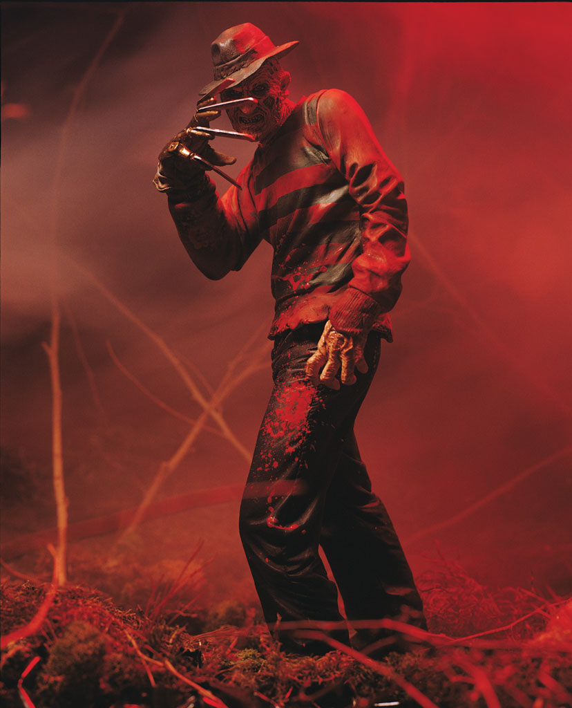

Snake
Based on the Kurt Russell character from John Carpenter’s Escape from L.A.

Patrick
Eve’s monstrous alien counterpart from the theatrical release, Species II.

King Kong
From the granddaddy of all horror films comes the ultimate monster: King Kong, from the 1933 classic black-and-white film. Kong is a savage brute, but a sympathetic one, too. He’s a monster kidnapped from his home and put into a strange situation, where he acts out accordingly. Our figure truly captures the dichotomy (and the size) of the beast and it comes complete with a custom diorama directly from the film.
Shaft
Based on the John Singleton remake of the classic ’70s film, the 2000 version stars Samuel L. Jackson in the title role. The action figure looks serious and sinister in a long black trench coat.
Edward Scissorhands
Based on the title character of Tim Burton’s stunning 1990 film, this highly detailed action figure captures both the innocence and potential for violence inside Edward Scissorhands as he tries to cope with his disability: scissors for fingers.
Edward Scissorhands
This 1986 David Cronenberg classic gives new meaning to “ironing the bugs out.” The Brundlefly, a computer synthesis of human and housefly DNA, is an entirely new species.
The Thing
Based on John Carpenter’s 1982 remake of the 1951 sci-fi/horror classic, The Thing. Since the alien creature had no real form (it took the shape of whatever creature it consumed), McFarlane Toys created two separate figures, packaged individually. The first is the Blair monster, the main creature at the end of the film.
Ash
“Good … bad … I’m the guy with the gun.” So speaks Ash, the swashbuckling anti-hero of Sam Raimi’s Army of Darkness, a character McFarlane Toys fans have been clamoring for.
Michael Myers
Based on the sociopathic slasher from the Halloween film series.
Freddy Krueger
Based on the dream-ghoul from the Nightmare on Elm Street series.